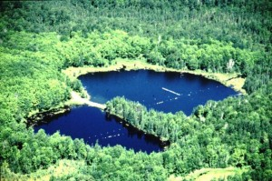

Three lakes, three personalities
Limnologists describe lakes by their trophic state — how productive they are, which depends mostly on how many nutrients (like phosphorus) and how much dissolved organic matter the lake receives. The three lakes below sit at very different points on that scale. All three are monitored by the North Temperate Lakes LTER, and all three have buoys that record oxygen every hour or faster.
🍃 Lake Mendota
Eutrophic · Madison, southern Wisconsin
Nutrient-rich and green.
A large (about 40 km²), fairly deep (25 m maximum) lake surrounded by farms and a city. Runoff delivers lots of nutrients, so algae grow thick every summer, and the water is often green and murky.
Lots of algae means lots of photosynthesis — and lots of organic matter that decomposes.
🍁 Trout Bog
Dystrophic (bog) · northern Wisconsin
Small, dark, and tea-colored.
A tiny lake (about 1 hectare, 8 m deep) ringed by peat and spruce. Water draining through the bog carries dissolved organic carbon, which stains it brown and absorbs most of the light a few centimeters down.
The forest shelters it from wind, so the surface stirs and trades gas with the air very little.
💎 Trout Lake
Oligotrophic · northern Wisconsin
Big, deep, clear, and nutrient-poor.
A large (about 16 km²), deep (35 m maximum) lake fed mostly by groundwater and rain, with very few nutrients. Few algae grow, so the water is clear and sunlight reaches deep.
There's a lot of water but not much life to change its chemistry.
Predict the oxygen
You know how Mendota's oxygen behaves from Module 1: it climbs during the day as algae photosynthesize and falls overnight as everything respires. Based on what you just read, how do you think oxygen behaves in each of the three lakes over a typical day in July?
Sketch it: for each lake, click and drag up or down inside its column to mark the range of a typical day — from the day's lowest oxygen to its highest. Oxygen is shown as % saturation (100% means the water holds exactly as much oxygen as it would in balance with the air). Think about how high each lake sits and how wide its daily range is.
What's driving each lake's oxygen?
A lake's oxygen is set by how much photosynthesis and respiration are going on, and those depend on a few key ingredients: nutrients (nitrogen, N, and phosphorus, P, feed algae), sunlight (PAR) to power photosynthesis, and water temperature, which speeds up life, including respiration.
Match game: for each ingredient, rank the three lakes from lowest to highest. Drag a lake into a slot (or tap a lake, then tap a slot). A lake can be used more than once. Then reveal the real summer 2019 values.
Nitrogen (N)
total N, µg/L · 0–2 mPhosphorus (P)
total P, µg/L · 0–2 mLight (PAR)
µmol/m²/s, July mean · depth varies*Water temperature
°C, July meanN and P: means of June–August 2019 samples taken at 0–2 m depth. *PAR is the July 2019 mean at the depth each lake's sensor measures it: surface (above the water) for Mendota, 25 cm below the surface for Trout Bog (a lux logger converted to PAR), and the buoy's PAR sensor for Trout Lake. Because the depths differ, light is not perfectly comparable — especially for the dark-water bog.
GPP, ER & NEP by lake type
Put the ingredients together. Remember from Modules 5–6: GPP is oxygen made by photosynthesis, ER is oxygen used by respiration, and NEP = GPP − ER. A lake with more GPP than ER is autotrophic (it makes more organic matter than it burns); one with more ER than GPP is heterotrophic.
Predict: for each lake, what do you expect its July metabolism to look like? Then reveal what the buoy oxygen data say.
Can we manipulate metabolism?
Limnologists test these mechanisms by conducting whole lake experiments.
A whole-lake experiment: add nutrients, watch the metabolism

You've seen that lakes with more nutrients tend to make more algae. But is that cause and effect? Ecologists tested it directly in the Cascade project at the University of Notre Dame Environmental Research Center (UNDERC) in Michigan's Upper Peninsula. Two neighboring lakes were monitored with sondes that recorded temperature, oxygen, pH, chlorophyll, and phycocyanin every few minutes from May 9 to September 4, 2015. Paul Lake was left alone as the unfertilized reference. In Peter Lake, inorganic nitrogen and phosphorus were added every day for four weeks, June 1 – June 29, then stopped.
| Lake | Treatment | N:P of addition | P loading | Nutrients added |
|---|---|---|---|---|
| Paul | Unfertilized reference | – | – | – |
| Peter | Fertilized | 15:1 | 3 mg P/m²/day | June 1 – June 29, 2015 |
Sketch it: draw daily GPP from May to September for the unfertilized lake and for the fertilized lake. The shaded band shows when nutrients were being added to Peter Lake. Pick a line, then click and drag across the chart. Think about when the lines separate and what happens after the nutrients stop.